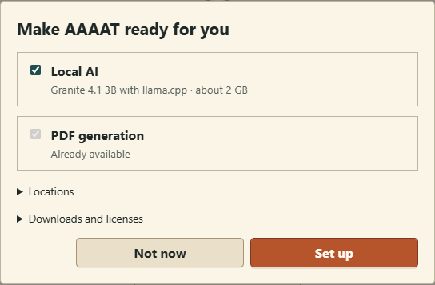
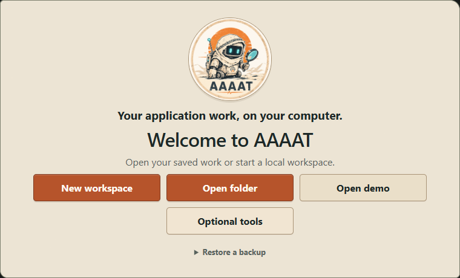

Get started
Make AAAAT yours.
Open the app, choose what you want to do, and see how your applications and documents fit together. You can explore with the included demo or work with your own information from the start.
Open AAAAT and get ready
Choose the tools you want for your work. PDF generation makes finished documents; Local AI helps with wording and information. You can set up either or both, and return to these choices later.
- Download AAAAT for your computer, install it, and open the desktop app.
- In Make AAAAT ready for you, select PDF generation, Local AI or both, then choose Set up. Follow any installation steps shown on your computer. Not now opens the app without installing the extras; you can return to setup later.
- Choose Open demo to look around with fictional examples, or New workspace for your own information. Pick an empty folder for the workspace.
You're ready: your chosen folder holds your applications, career information and documents on your computer.
What gets installed, and how to use tools you already have
PDF generation uses pdfLaTeX to turn CVs and letters into PDFs. If you already have a compatible TeX installation, AAAAT can reuse its pdflatex executable; otherwise setup opens MiKTeX, BasicTeX or TeX Live as appropriate for your computer.
Local AI offers the tested IBM Granite 4.1 3B Q4_K_M model with the llama.cpp CPU runtime, approximately 2 GB to download. It runs on your computer; speed depends on your hardware. The installed model starts with AAAAT and stops when you quit.
Expand Locations in the setup dialog to select an existing pdfLaTeX → Browse executable or folders under Local tools and Downloads. These folder choices affect future installations without moving existing tools. You can return through Settings → Documents → PDF setup or Settings → AI → Local AI.
Application and document editing work without these extra tools. Generating a PDF requires pdfLaTeX; in-app AI help needs a selected connection. Full PDF setup guide · Local AI and other connections




Explore what AAAAT looks like
Want to see AAAAT in action before entering anything? Choose Open demo on the welcome screen. AAAAT creates a separate workspace filled with fictional examples: job opportunities, professional experience and documents. It's safe to look around and make changes there; your own information isn't involved.
- Open Applications in the left navigation. Each cover represents an opportunity. Choose one to see more information.
- Try Search with a company name or job title shown on a cover. Open the result and read the saved details and original material.
- Open My information to see how career experience and skills are kept for reuse, then open Documents to see the CVs and letters prepared from that information.
You don't have to use the demo to get started. A new, empty workspace works just as well for saving an opportunity or making a CV.
Save an interesting job offer
Found an opportunity online? Keep a copy of the offer so you can return to it whenever you need to. You don't need to apply immediately or fill in every detail.
- Copy the text of the job posting, or a message from a recruiter.
- In AAAAT, open Applications and choose New from the top bar.
- Paste into Application text on the left. On the right, add the organization, job title or other details that would help you recognize it later. If you don't know something, leave it blank.
- Choose Save. The original offer and anything you added are kept together.
Prefer to enter the details yourself? That's fine too. You can save just a few words or a useful fragment and add the rest another day.

Find it again when somebody calls
A recruiter mentions a company you spoke to weeks ago. Instead of searching through messages, go back to AAAAT.
- Open Applications and use Search to look for the employer, role or another detail you remember.
- Choose the matching cover to see more. Select Open / Edit when you want the original offer, saved notes or complete information.
- After the call, go to Sources → Add, choose Conversation, write the useful details and select Add source.
Now you have the context: the original posting and later conversation stay with the same opportunity.


Choose what stands out on the covers
Maybe you recognize a job by its company, location or working hours. Put those details where you can spot them quickly.

- Open an application with Open / Edit. Find the field you want to emphasize and select its ☆ star to make it a favourite. A filled ★ shows it is selected.
- Open that field's ⚙ gear. Under Card prominence, choose Small, Regular or Large. For example, make the employer Large and a secondary detail Small.
- Use ↑ to move the favourite earlier or ↓ to move it later. Return to Applications with the top-bar ← to see the result.
Your covers now follow your priorities. These choices affect how you browse applications; they do not change the saved facts.
Need a detail that isn't listed? Under Details → Information setup, choose Add information, give it a name and select Add. Then enter its value and star it if you want it on covers. More about fields and their controls →
Keep your career information ready to reuse
Your experience need not be rewritten every time you make a CV. Save the useful facts once, then choose how to present them.
- Open My information → ＋ New. Choose an Information type, such as Experience, or type your own group name.
- Enter the main detail, such as your Role. Use Add detail for the description, organisation, dates or other information you need. Choose Save.
- For another emphasis, open the saved item, expand Saved variations and select New variation. Give it a clear name, adjust the wording and choose top-bar Save.
The facts stay reusable: when editing a linked CV item, Use My information lets you choose its current version or a named variation. The demo shows Alex Morgan's Public-facing emphasis alongside the original community-programmes experience.

Make a CV and cover letter
Start with the career information you've saved or write from a blank CV. Documents also work independently of job applications.

- Open Documents. In New CV from, choose My information to reuse what you've saved, or Blank to start fresh. Select New CV.
- Edit the wording. Use ＋ Add section and ＋ Add information when you need more content; a section's ••• menu changes its name or order. Choose Save to keep the CV.
- Choose PDF in the top bar. Open the finished output from Documents → Generated files.
You have an editable CV and a finished PDF. Later edits do not rewrite the PDF you already made.
If PDF generation needs setup
Open Settings → Documents → PDF setup. Complete the offered TeX installation, or select your existing pdflatex executable under Locations. Return to the document and choose PDF again. Detailed PDF and LaTeX guide →


Choose the look of your CV
Open Document options → PDF style. Choose Professional, Classic for a single-column monochrome layout, or Editorial for a main-and-secondary layout. Then choose PDF to see your document in that style.
Want an image? Expand Photo or banner near the CV title and choose Choose image to select a PNG or JPEG. Set Use as to Photo or Banner, then Save. Remove image takes it out again. Your image keeps its proportions; there are no cropping controls. More about CV appearance →
Add a letter when you need one
In Documents, choose New letter. Edit the sender details, recipient, body and closing, then choose Save and PDF. To keep it beside an opportunity, open that application and choose Create cover letter (or New cover letter if one already exists) instead.
Letters and combined application PDFs → · CV variations and reusable templates →

Use AI when it helps
Use AI for a particular task: picking details out of a long posting, improving a CV sentence or drafting a letter. You review the wording and decide what to keep.
Use your existing assistant
- Open Settings → AI → Connect another AI → Connection setup. Register the shown command and arguments in a compatible local assistant.
- Download the AAAAT assistant instructions for its project instructions or skills.
- Open an application and choose ⋯ → AI task → Application details. Read or edit the request, then use its 👁 to allow the connected assistant to read it. For document work, use the application's CV + cover letter → AI access instead.
Ask your assistant to work on that selected task or document, then return to AAAAT to inspect the result. Full connection and document-work guide →
Ask from inside AAAAT
If you installed Local AI, check Settings → AI for the selected connection. You can choose another compatible model there too.
- Open Applications → New and paste a job offer.
- Choose Fill to ask your selected AI to find useful details. Review what it adds and correct anything inaccurate.
- Select any proposed new Tags you want to keep, then choose Save.
If your assistant cannot connect
Use ⋯ → AI task → Copy to take the editable request to any text-capable LLM, then bring its answer back. Follow the copy-paste fallback →
Explore your AI choices · Change the instructions · Choose what information is shared
Keep going at your own pace
AAAAT can be just a place to remember opportunities, just a CV workshop, or both. You can explore reusable Tags, document variations, AI connections and backups whenever you want more control.